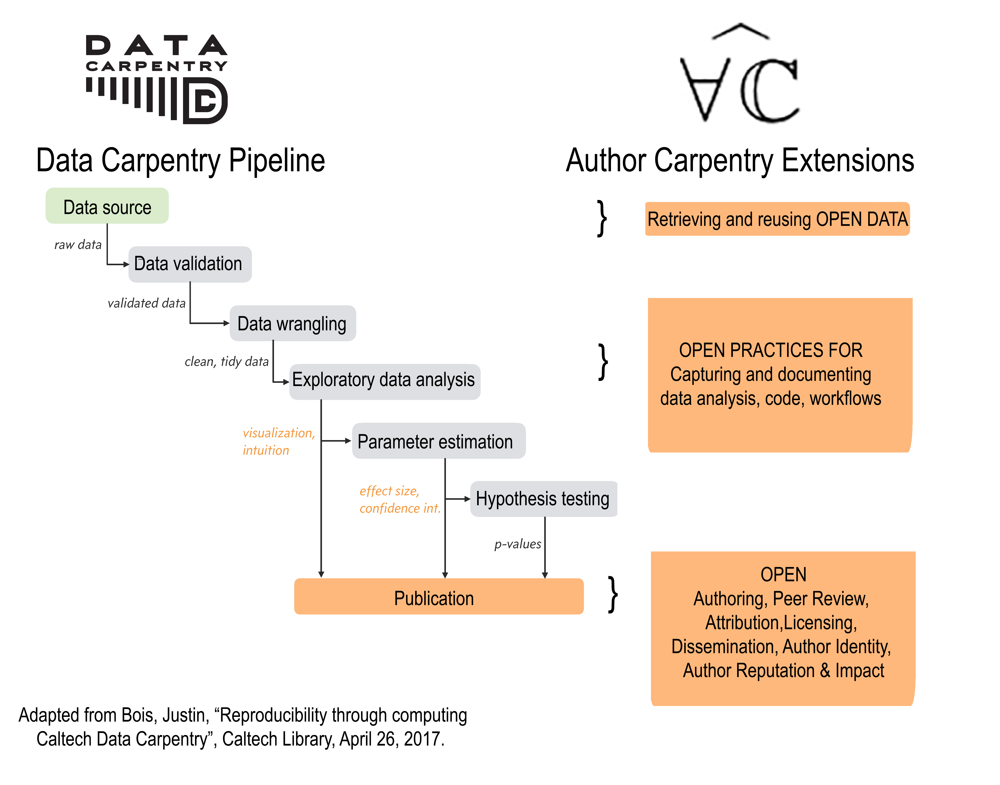

https://doi.org/10.7907/Z96H4FFZ
Welcome to the web home for Author Carpentry , a researcher-to-researcher training and outreach program in open authoring and publishing, scholarly identity and reputation, and research impact. Inspired by the Modern Scientific Authoring lesson proposed by Software Carpentry founder Greg Wilson, AuthorCarpentry builds on this vision to complement and extend the research pipelines covered in Software and Data Carpentry. AuthorCarpentry picks up with the “last mile” of the research process: writing, reporting, review, dissemination and licensing, impact measurement, and establishing author identity and reputation (as shown in the illustration below).

We are an open community of scientists, scholars, and librarians with collaborators and participants from around the world. Current Author Carpentry developers and trainers are certified Instructors for Data/Software Carpentry and commit to the instructional approaches, assessment methods, and lesson formatting of the Carpentry community.
Caltech Library serves as the maintenance organization for lessons and planning documentation and maintains all content on the GitHub site.
Research librarians have long shared expertise in authoring and publishing with our campus communities, and we have developed considerable expertise in knowledge management principles and practices; instruction and assessment; information ethics and law, responsible conduct of research; and research information systems. Moreover, we share a vision for equal and universal access to information and culture as a basic human right, enthusiastically promoting the goals of the Open Source, Open Science, and Open Access movements.
The Caltech Library is recasting its instructional program using a ‘Carpentry’ approach to better meet the needs of successful, time-constrained, and (understandably) often pre-occupied scientists and scholars, while advancing new forms of scholarly communication that improve access, re-use, and replication of scientific claims. The desired outcome is a set of pragmatic, efficient and useful Author Carpentry lessons that can be offered alone as ‘tips and tools’ sessions; in combination as a half-day or full-day workshop; or as snap-on modules to enhance existing Open Science and Research Data management programs.
AuthorCarpentry is an Open Project and we enthusiastically welcome contributions of librarian and other research professionals. Anyone with an interest in the material is welcome to take part. The project is being co-ordinated by Gail Clement and Tom Morrell at Caltech Library. Please get in touch with us at authorcarpentry@library.caltech.edu or register your ideas on the Issues section.
All participants should agree to abide by the Software Carpentry Code of Conduct.
All the lessons are licensed under a Creative Commons Attribution-ShareAlike 4.0 International License. Exceptions: embeds to and from external sources, and direct quotations from speakers.